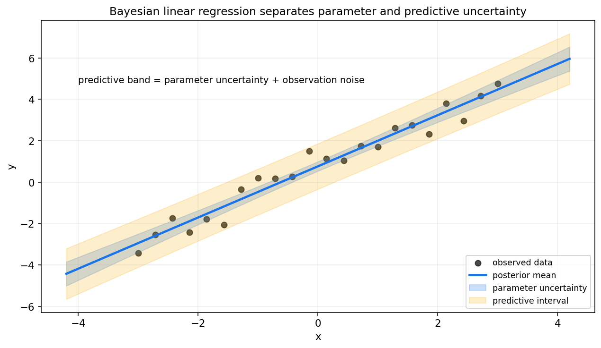
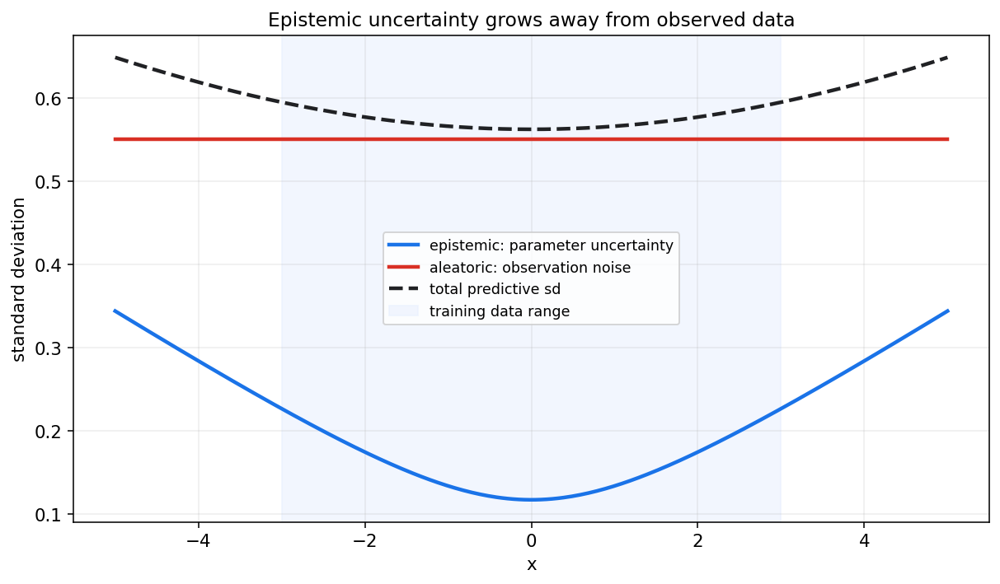
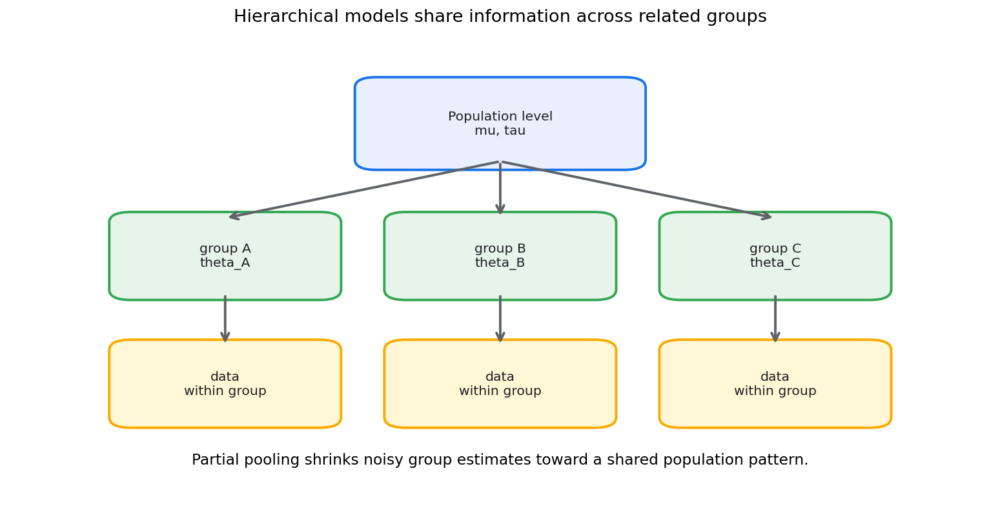
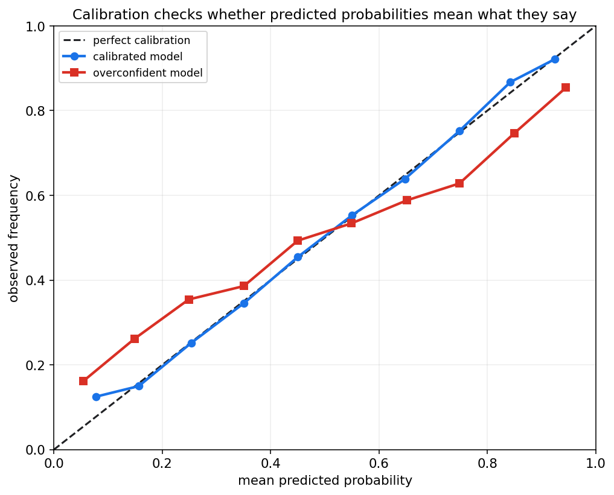

贝叶斯统计第十四章教程: 贝叶斯回归, 层次模型与不确定性估计
第十二章讲贝叶斯更新, 第十三章讲后验计算.
这一章把贝叶斯思想放进建模和预测:1. 回归模型怎样给出参数后验和预测区间?
2. 参数不确定性和观测噪声有什么区别?
3. 多个相关群体的数据能不能共享信息?
4. 分类概率怎样检查是否可信?贝叶斯建模的独特价值在于, 它不只输出一个最优参数, 还把不确定性作为结果的一部分.
0. 先看全章主线
flowchart LR
A["贝叶斯建模"] --> B["贝叶斯线性回归"]
B --> C["参数后验<br/>beta 的均值和方差"]
B --> D["后验预测<br/>均值和预测区间"]
D --> E["不确定性分解<br/>epistemic + aleatoric"]
A --> F["层次模型"]
F --> G["组级参数"]
F --> H["总体级参数"]
H --> I["部分池化<br/>共享信息"]
A --> J["贝叶斯分类"]
J --> K["概率预测"]
K --> L["校准"]
A --> M["更复杂模型入口<br/>GP, BNN"]一句话概括:
贝叶斯建模不是只把参数换成随机变量,
而是把参数不确定性, 预测不确定性和层次结构一起纳入模型.
1. 贝叶斯线性回归
1.1 从普通线性回归开始
普通线性回归写作:
其中常假设:
频率学派通常估计一个点:
贝叶斯线性回归则给系数加先验:
于是数据后得到:
这是一整条后验分布, 而不是一个点.
1.2 正态-正态共轭形式
若 $\sigma^2$ 已知, 且:
则后验仍为正态:
其中:
这和第十二章 Normal-Normal 更新一致: 后验精度 = 先验精度 + 数据信息.
1.3 图像直觉

图中蓝色线是后验均值.
蓝色带表示参数不确定性, 黄色带表示加入观测噪声后的预测区间.
这张图要留下的直觉是:
参数后验越不确定, 均值函数越不确定.
即使参数非常确定, 新观测仍然会有观测噪声.
2. 后验均值, 后验方差与预测区间
2.1 参数后验摘要
对每个系数 $\beta_j$, 可以报告:
- 后验均值
- 后验标准差
- 可信区间
- $P(\beta_j>0\mid D)$
这些量都来自后验分布:
2.2 新输入点的均值预测
给定新输入 $x_*$, 条件均值是:
由于 $\beta$ 有后验分布, $f_*$ 也有后验分布:
若 $\beta\mid D\sim \mathcal{N}(\beta_n,\Sigma_n)$, 则:
2.3 新观测的预测分布
新观测还包含噪声:
所以:
这比均值函数后验更宽.
2.4 预测区间不是置信带
预测区间包含未来观测噪声.
均值函数可信带只描述平均关系的不确定性.
不要把二者混在一起:
- 均值可信带: 模型平均函数在哪里
- 预测区间: 下一个观测值可能在哪里
3. 两类不确定性
3.1 Epistemic uncertainty
Epistemic uncertainty 是认知不确定性, 来自信息不足.
在贝叶斯回归中, 它对应参数不确定性:
样本更多, 覆盖更充分时, 它通常会下降.
3.2 Aleatoric uncertainty
Aleatoric uncertainty 是数据本身的随机噪声.
例如:
- 传感器噪声
- 同一输入下响应本来就波动
- 标签存在天然随机性
即使无限多数据, 这部分也不会完全消失.
3.3 分解图

图中训练数据范围外, epistemic uncertainty 变大.
aleatoric uncertainty 由观测噪声给定, 在这个例子里保持稳定.
核心结论:
模型不知道和世界本来就随机, 是两种不同的不确定性.
4. 层次模型初步
4.1 为什么需要层次模型
现实数据常有分组结构:
- 不同城市的转化率
- 不同学校的学生成绩
- 不同用户群体的留存率
- 不同医院的治疗效果
每组数据量可能不同.
如果完全分开估计, 小组样本会很不稳定.
如果完全合并估计, 又会抹掉组间差异.
层次模型提供第三条路:
各组有自己的参数, 但这些参数来自共同的总体分布.
4.2 基本结构
设第 $j$ 组有参数 $\theta_j$:
组级参数来自总体层:
总体层参数也可以有先验:
这就是层次结构.

4.3 三种估计方式
面对多个组, 有三种常见做法:
- 完全合并 pooling
- 所有组共用一个参数
- 稳定但忽略组差异
- 完全分开 no pooling
- 每组独立估计
- 保留差异但小样本组很不稳定
- 部分池化 partial pooling
- 每组有自己的参数
- 小样本组被拉向总体平均
- 大样本组更多由自己数据决定
4.4 部分池化的价值
部分池化能在稳定性和差异性之间折中.
直觉上:
对证据少的组, 多借一点总体信息.
对证据多的组, 多相信自己的数据.
这也是层次模型比简单分组估计更有力量的地方.
5. 贝叶斯分类初步
5.1 分类输出应该是概率
二分类问题中:
我们关心:
贝叶斯分类不是只学习一个固定权重, 而是对权重后验平均:
5.2 与 Logistic 回归的关系
贝叶斯 Logistic 回归可以写成:
并对 $\beta$ 给先验:
由于后验通常没有闭式形式, 常用第十三章的方法:
- MAP
- MCMC
- VI
- Laplace 近似
5.3 分类中的不确定性
分类概率不确定性来自:
- 类别本身重叠
- 数据噪声
- 参数不确定
- 训练数据覆盖不足
只输出类别标签会丢掉这些信息.
6. 校准与概率可靠性
6.1 什么是校准
如果模型对一批样本都预测概率约为 0.8, 那么其中真实为正类的比例也应约为 0.8.
这叫校准.
6.2 校准曲线

横轴是模型预测概率, 纵轴是实际发生频率.
完美校准应落在对角线上.
图中红线代表过度自信模型: 它给出的极端概率比真实频率更激进.
6.3 高准确率不等于校准
一个分类器可能 accuracy 很高, 但概率不可靠.
例如它总是把 0.7 的事件预测成 0.95, 排序可能不错, 但概率语义坏了.
校准对下面场景尤其重要:
- 医疗风险评估
- 金融风控
- 自动驾驶安全
- 成本敏感决策
- 人机协作系统
7. 高斯过程回归入口
7.1 从参数到函数
贝叶斯线性回归给参数 $\beta$ 放先验.
高斯过程回归更进一步, 直接给函数 $f(x)$ 放先验:
其中:
- $m(x)$ 是均值函数
- $k(x,x')$ 是核函数或协方差函数
7.2 核函数表达相似性
核函数描述:
两个输入点越相似, 它们的函数值越相关.
常见 RBF 核中, 距离越近, 相关性越高.
7.3 GP 的价值
高斯过程天然给出:
- 预测均值
- 预测方差
- 远离数据处更大的不确定性
它适合小到中等规模数据, 贝叶斯优化和不确定性敏感任务.
限制是计算代价通常较高, 朴素实现需要处理 $n\times n$ 协方差矩阵.
8. 贝叶斯神经网络直觉
8.1 给神经网络权重放后验
普通神经网络学习一个权重:
贝叶斯神经网络把权重视为不确定:
预测时做后验平均:
8.2 为什么难
神经网络参数维度很高, 后验非常复杂.
精确贝叶斯推断几乎不可行.
常见近似包括:
- 变分推断
- Laplace 近似
- Monte Carlo Dropout
- 深度集成
- SWAG 等近似后验方法
8.3 BNN 解决什么
贝叶斯神经网络主要希望解决:
- 参数不确定性
- 分布外样本风险
- 小数据下的过度自信
- 预测区间和风险控制
它不是自动提升准确率的工具.
它更重要的价值是不确定性表达.
9. 本章主线总结
第十四章可以压成几句话:
- 贝叶斯回归给参数后验, 不只给一个点估计.
- 后验预测同时包含参数不确定性和观测噪声.
- Epistemic uncertainty 来自信息不足, 数据增加后可降低.
- Aleatoric uncertainty 来自数据本身随机性, 不会靠更多同类数据完全消失.
- 层次模型通过部分池化在组间共享信息.
- 贝叶斯分类输出的是后验平均后的概率.
- 校准检查预测概率是否可信.
- 高斯过程给函数放先验, 贝叶斯神经网络给权重放后验.
核心提醒:
预测均值不是全部结果.
一个模型还应告诉我们它什么时候知道, 什么时候不知道.
10. 实战清单与典型误区
10.1 实战清单
做贝叶斯建模时, 先问:
- 响应变量是什么类型?
- 先验是否表达了合理尺度?
- 目标是参数解释还是预测?
- 是否需要层次结构?
- 组间是否可以共享信息?
- 后验预测是否覆盖观测数据?
- 参数不确定性和观测噪声是否分开报告?
- 分类概率是否校准?
- 模型在数据范围外是否过度自信?
- 推断方法是否经过诊断?
10.2 典型误区
- 把预测均值当全部结果
贝叶斯模型还应报告不确定性范围.
- 混淆两类不确定性
Epistemic 和 aleatoric 的来源不同, 应对方式也不同.
- 以为层次模型只是复杂先验
它的核心价值是相关群体之间的信息共享.
- 把校准当成 accuracy
校准关心概率语义, accuracy 关心分类是否正确.
- 以为贝叶斯模型自动保守
先验, 似然和推断近似不合理时, 贝叶斯模型也会过度自信.
11. 和前后章节的连接点
第十二章提供先验, 后验和后验预测语言.
第十三章提供 MAP, MCMC 和 VI 等计算方法.
本章把它们落到回归, 分类和层次模型中.
往后看, 统计学习和深度学习中的不确定性估计, 校准, 集成方法, 贝叶斯神经网络, 都可以回到本章语言理解.
12. 本章收尾
贝叶斯建模的价值不只是让公式更复杂.
它真正提供的是一套表达不确定性的方式:
参数有不确定性,
预测有不确定性,
群体之间可以共享信息,
概率输出需要校准.
下一章开始进入统计学习.
重点会从"参数后验"转向"模型能否泛化到未来数据".